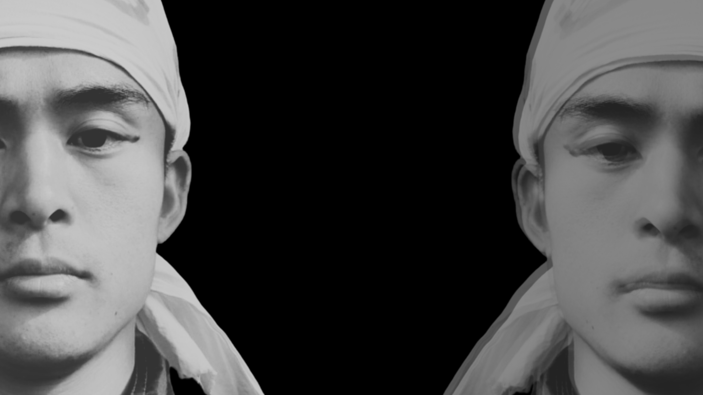
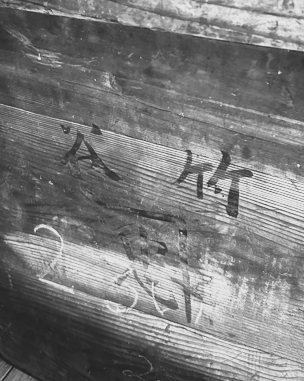
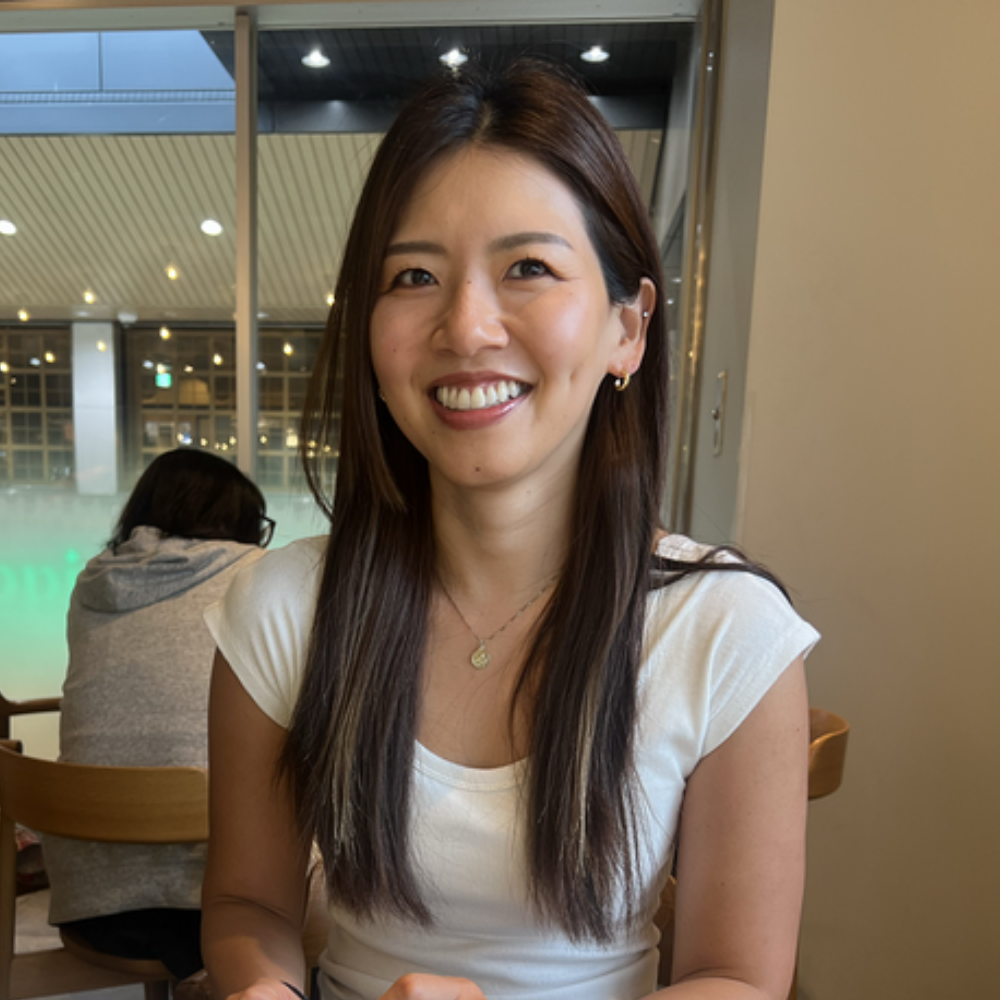

W - 和束
和束と和 - ハーモニー
Wは和束を表します。お茶が単なる産業ではなく、生き方であり続けてきた土地です。また、人々を繋ぐ円である「和」、そして調和そのものを表しています。この神聖な地から、私たちは世代を超えて守られてきた系譜を受け継いでいます。
Wmatcha & co.は、単に抹茶を販売する会社ではありません。お茶を通じて、文化、産業、精神性を再構想する会社です。京都・和束にある私たちの先祖代々の茶屋「かね忠」に根ざし、抹茶を単なる消費ではなく、意味のある力として世界文化の中心に戻すために存在しています。私たちは妥協を拒む人々、騒音よりも明晰さを、誇大広告よりも本質を、利便性よりも純粋さを選ぶ人々を集めています。

ゲームには任天堂があり、自動車にはトヨタがあります。日本酒には獺祭があります。あらゆる業界で、日本はそのカテゴリーを超え、グローバルスタンダードとなったブランドを生み出してきました。彼らは単に製品を輸出したのではなく、価値観を輸出したのです。しかし、抹茶に関しては、何か未完成な感じがします。この問いがWmatcha & co.の始まりです。日本の文化的深さと、グローバル市場における抹茶の声の喪失との間の未解決の緊張から生まれた私たちは、現代生活が奪うものを取り戻すために存在しています。
Wは和束を表します。お茶が単なる産業ではなく、生き方であり続けてきた土地です。また、人々を繋ぐ円である「和」、そして調和そのものを表しています。この神聖な地から、私たちは世代を超えて守られてきた系譜を受け継いでいます。
Mは弥勒、未来の仏を指します。これは宗教のシンボルではなく、再生、回復、そして心の純粋さの象徴です。抹茶が現代生活が奪うものを取り戻すことができたら？刺激としてではなく、人々を自分自身に戻す文化として。
「忠」は真心とも読め、誠実さや全力の献身を意味します。先人から託された茶畑を守りながら、誠実に生きるということがお茶を通じてどのように表れるべきか、そしてその葉がいかに美しく社会へと流れていくかを、日々問い続けています。
卸売と文化活動に従事する会社として、製品だけでなく価値観を輸出する象徴的な日本茶ブランドの創造に専念しています。京都・和束の先祖代々の茶屋「かね忠」から、日本茶を通じて新しい時代をリードしています。
高齢化する農家を支援し、インフレ市場における透明な価格設定を実現し、日本茶の多様性を守る人々を繋ぐことで、茶産業の構造を再構築しています。真のお茶の愛好家は投機しません。参加するのです。

かね忠 · 京都府和束町WMATCHA&CO.のルーツは、かつてToshiの祖先が京都・和束で営んでいた茶屋「カネ忠」に遡ります。
海外での学びと仕事を経て、Toshiは世界の視点から改めて日本文化の価値を再発見しました。抹茶への関心は、茶産地を守り、この世代に託された遺産を受け継ぐという決意へと育っていきました。
現在、WMATCHA&CO.は和束に自社の茶畑を持ちながら、一流の生産者から直接栽培を学んでいます。生産・貿易・文化体験を通じて、茶文化を受け継ぐだけでなく、それが未来へと続いていく道を築いています。
日本茶は、これから先の百年をどう生き抜くのか。
世界的な抹茶需要が高まる一方で、産地では農家の高齢化、労働力不足、耕作放棄地の増加、後継者の減少が進んでいます。同時に、消費者は自分が口にするものの背景にある人や場所から、ますます遠ざかっています。
私たちは、お茶が単なる商品ではないと信じています。それは、何世代にもわたる知恵と技術、そして土地を守り続けてきた営みの結晶です。
私たちの使命は、生産者と消費者を再び繋ぐこと。お茶がその味わいだけでなく、その背景にある人々、文化、風景とともに評価される未来を築くことです。WmatchaとWTEAを通じて、より透明で、持続可能で、物語性のある茶産業を目指しています。


